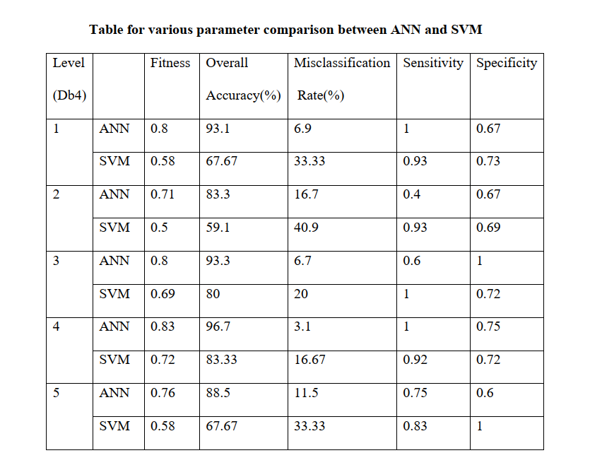
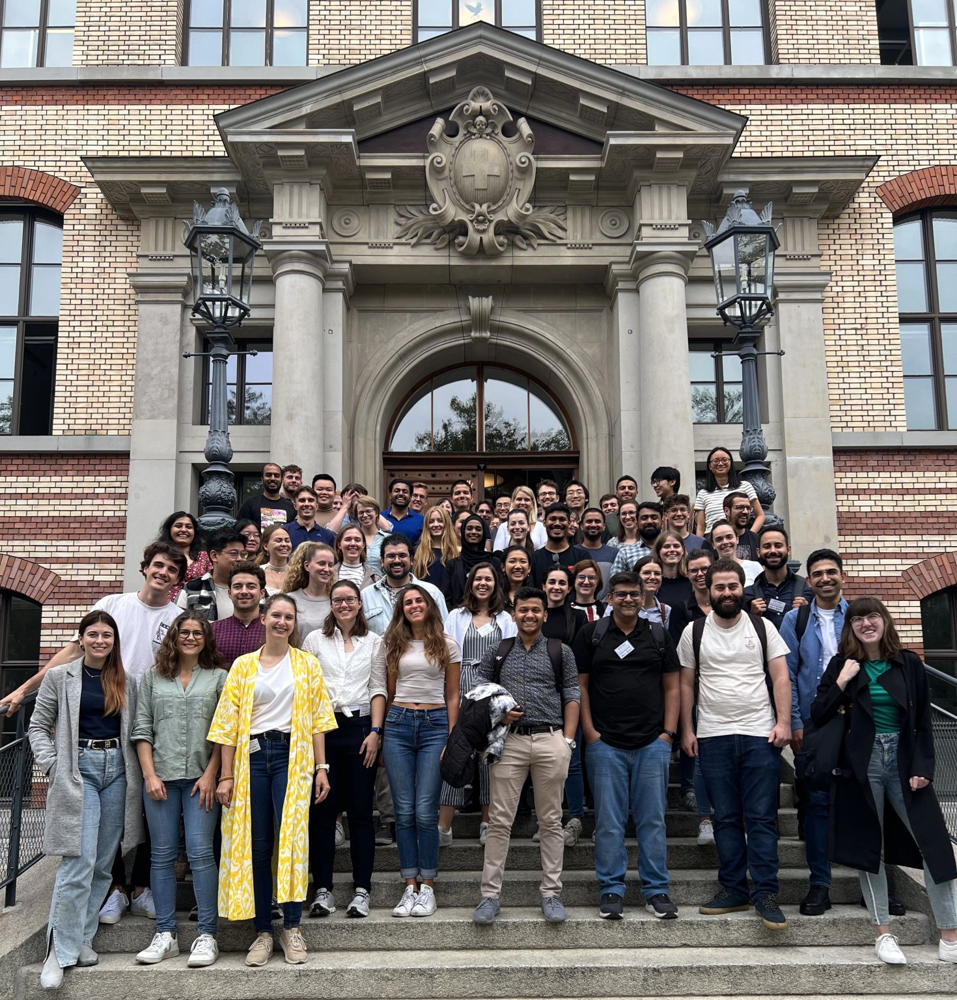

Education & Internships
Academic background with a focus on robotics, signal processing, medical AI, and hands-on multidisciplinary training.
Education
Friedrich-Alexander-Universität Erlangen-Nürnberg (FAU), Germany
Thesis Topic: Intuitive Control of Franka Robotic Arm Using Hand Gesture
Designed and implemented a gesture-based control system for the Franka Emika Panda robotic arm, enabling intuitive human–robot interaction for complex manipulation tasks. The system interprets hand gestures to control robot motion and gripper functionality in real-time.
Implementation Highlights:
- Gesture recognition pipeline using EMG/IMU features for gesture classification.
- Custom MuJoCo simulation pipeline integrated within iM Blocks using C# and Python.
- Gesture-based UX menu to select control modes (Cartesian movement / gripper control).
- Mapped gestures to joint velocities and Cartesian-space commands using IK + Jacobian control.
- Executed tasks like screw insertion / object manipulation using a multi-stage gesture flow.
Core & Specialized Coursework:
- Medical AI & Image Processing: Biomedical Signal Analysis, MRI, Pattern Recognition, Time-Series ML, Data Science
- Neuroscience & Interfaces: Neuromuscular Interfaces, Movement Neuroscience, Cognitive Neuroscience
- Engineering & Programming: Advanced C++, Human–Computer Interaction, Seminar: Learning in Medical Robotics
- Medical Foundation: Anatomy & Physiology for Engineers, Machine Learning in MRI
Chittagong University of Engineering & Technology (CUET), Bangladesh
Thesis Title: Non-Contact Ballistocardiogram (BCG) Measurement in Bed & Disease Detection
Thesis Grade: 1.0
Proposed a non-invasive cardiac monitoring approach using BCG signals captured via a piezoelectric sensor array embedded in a bed, benchmarked against ECG. Applied ANN and SVM classifiers to detect valvular diseases (e.g., Mitral Valve Stenosis, Pulmonary Valve Stenosis) and evaluated accuracy and misclassification rate on hospital-collected data.

Course Highlights:
- Control Systems, Signals & Systems, Digital Signal Processing, VLSI Design
- Power System Analysis, Electrical Machines, Power Electronics
- Microprocessor & Interfacing, Measurement & Instrumentation
- Renewable Energy, High Voltage Engineering, Telecommunication
Internships & Training
EXCITE Zurich Summer School on Biomedical Imaging
Participated in a two-week summer school jointly hosted by ETH Zurich and the University of Zurich, covering biomedical imaging modalities (MRI, CT, ultrasound, microscopy, X-ray) with lectures, lab sessions, industry day, and poster symposium.
Workshops (selected highlights):
- Cardiac ultrasound + right ventricular function (hands-on scanning sessions)
- 3D confocal microscopy of optically cleared hematopoietic tissues
- MRI processing & visualization (registration, segmentation, 4D-flow, diffusion)
- Functional renal MRI (DWI, IVIM, DTI, BOLD) with volunteer data + post-processing
- X-ray imaging & 3D analysis with XCT instruments and real-time reconstruction
Skills Gained: multimodal imaging, data processing, segmentation, visualization, scientific communication.

Training Institute for Chemical Industries (TICI), Bangladesh
Completed an interdisciplinary industrial training program approved by CUET, covering electrical systems, instrumentation, control, and safety.
Electrical & Electronic Engineering
- Electrical safety, switchgear, MCB/MCCB, transformer basics, generator synchronization
- Visited substations, solar systems, motor control systems, and robotics lab demonstrations
Instrumentation & Control Engineering
- Sensors, transmitters, instrumentation symbols, process control setups
- PLC programming, Ladder Logic, SCADA, PID control, actuators
Mechanical Engineering
- Bearings, alignment, turbines, industrial applications
Industrial Safety & Health
- Fire protection protocols and proper use of PPE